| Eclipse Article |

The Visual Editor project provides reference
implementations of a graphical user interface builder for the JFC and
SWT widget toolkits built around an extensible framework. The
motivation for this came from exerience with previous GUI builders that
while they provided high function end points for particular toolkits
were unable to be adapted to support custom behavior for areas of
functionality such as custom widgets, custom layout managers, user
specific code generation patterns, etc... A design goal of the
visual editor is that is none of its own custom behavior for any JFC or
SWT classes is done through any hard coding in the base, so any
specific logic that the VE employs to enable say a tab pane, dropping a
control on a composite, or showing feedback for a particular layout
manager is soft coded through extension points and can be leveraged by
anyone wishing to employ similar techniques.
This tutorial covers an example where a user has a
custom widget that they wish to extend the visual editor to have
specific builder behavior for. It covers topics such as extending
the Visual Editor's palette, building a BeanInfo class and working with
EMF .override files to introduce custom editor behavior.
Gili Mendel, IBM
Joe Winchester, IBM
Dave Orme, db4objects
March 16, 2005
In this tutorial a 3.1 based Eclipse plugin
org.eclipse.ve.example.customwidget will be created that
illustrates some of the basic touch points of the visual editor.
To do this an SWT custom widget will be built that combines a Label,
Text and Button in a single widget called org.eclipse.ve.examples.customwidget.MyCustomPrompter.

MyCustomPrompter has two properties: type and text. These each have get and
set methods and can be used to configure the behavior of the button and
the label's text. There is also a ButtonSelectionEvent event that is
raised when the prompter's button is pressed, and listeners can
register for this callback using addButtonSelectionListener(ButtonSelectionListener
aListener);
In the
absence of the plugin that this tutorial builds for the class MyCustomPrompter it can be used by
a user
who drops it onto an SWT composite by adding a JAR (or folder)
containing the class to their Java project's build path and using
ChooseBean from the palette to select MyCustomPrompter and drop it onto
a composite and begin working with it. Through inheritance (MyCustomPrompter extends org.eclipse.swt.widgets.Composite)
the custom control will be rendered correctly, its properties will be
determined using JavaBeansTM reflection and available to
modify using the PropertiesViewer. The event will also be
determined automatically through introspection by the Visual Editor and
available to the user to add listeners to through the Add Event
dialog. This tutorial shows how the
developer of the plugin can enable specific visual editor behavior over
and above the default that is determined through inherited behavior and
provide a high level edit experience for users of the MyCustomPrompter class. The
examples given are purely for illustrative purposes only and to
highlight some of the available ways to extend the behavior of the
Visual Editor, and it is expected that the reader of this tutorial will
use it to learn the extension mechanism and then apply this to their
own custom widget or Java class. << Disclaimer here about fitness
of the sample code required >>
| Before |
With plugin showing Custom category with the MyCustomPrompter class |
| 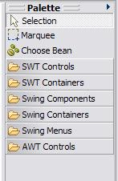 |
 |
| Before |
With plugin |
With plugin |
| type
property displayed with default int editor |
type property displayed as static constant name | type
property edited with drop down list of enumerated
allowable values |
 |
 |
 |
| Before with default String
editor behavior for text property |
With plugin showing custom
editor for text property |
 |
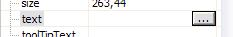 |
 and the text VE Rules over the image of the live visual
control. In addition the default behavior of a Composite
graphical edit part is to draw a border around it in the editor so that
it can be located by the user irrespective of whether it has child
controls or not. MyCustomPrompter
is an aggregate of three child controls into a custom
widget so the graphical edit part will remove the artificial border.
and the text VE Rules over the image of the live visual
control. In addition the default behavior of a Composite
graphical edit part is to draw a border around it in the editor so that
it can be located by the user irrespective of whether it has child
controls or not. MyCustomPrompter
is an aggregate of three child controls into a custom
widget so the graphical edit part will remove the artificial border.| Before with default behavior
showing the image of the live visual control with a border |
With plugin showing custom edit
part with an icon and label and no boder |
| 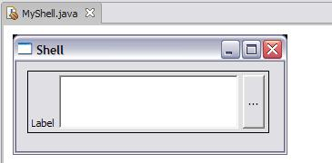 |
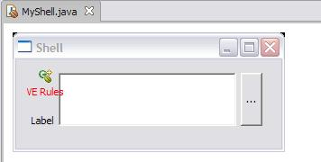 |
| Before with default code
generation behavior |
With plugin showing the extra
comment line code generated for the setText(String) method |
| private void createMyCustomPrompter()
{ myCustomPrompter = new MyCustomPrompter(sShell, SWT.NONE); myCustomPrompter.setText("Text Value"); } |
private
void createMyCustomPrompter() { myCustomPrompter = new MyCustomPrompter(sShell, SWT.NONE); myCustomPrompter.setText("Text value"); // Prompter Text Property } |
| Before where the Events menu has
no preferred events |
With plugin the Events menu has buttonSelected as a preferred event |
| 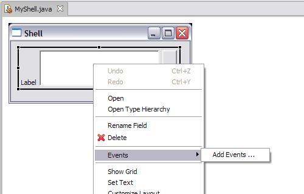 |
 |
Getting Started
Creating the Plugin
The Custom Widget
Creating a Classpath Container
Adding a palette
category for our widget
Using an ENUM cell editor
Creating a SWT cell editor
Overriding a GEF edit part
Overriding an Expression
Decoder
Preferred Event
This tutorial goes go through the steps required to build a plugin
called org.eclipse.ve.example.customwidget.
The pre-requisites are an Eclipse 3.1 target environment
which has a 3.1 codebase for the Visual Editor, GEF and EMF
installed. These can be obtained from the Visual
Editor's download page.
 Although the plugin is designed to target 3.1 it can be developed in an
earlier environment such as 3.0.1. The target environment is the
one that is run when the Run ...
Eclipse Environment is used to launch a runtime
workbench. You can use Windows->Preference->PDE->Target
Platform to view and change the target environment and Help About to see the version of
Eclipse.
Although the plugin is designed to target 3.1 it can be developed in an
earlier environment such as 3.0.1. The target environment is the
one that is run when the Run ...
Eclipse Environment is used to launch a runtime
workbench. You can use Windows->Preference->PDE->Target
Platform to view and change the target environment and Help About to see the version of
Eclipse.
The completed plugin can be obtained separately as described in the
section A complete example
This section describes how to build the plugin org.eclipse.ve.example.customwidget.
This will be used to package the CustomWidget itself as well as
the include the extensions required to overide its default
behavior. The end result for users is that they will install this
plugin onto their Eclipse environment and then configure their Java
projects to use it << see
section >>.
To create the plugin select open the New Project wizard using the
menu options File > New >
Project and choose Plug-in Project. as shown in Figure 1.
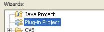
On the first page of the creation wizard name the plugin org.eclipse.ve.example.customwidget,
select 3.1
as the target version and select the check box Create an OSGi bundle
manifest. Press Next
to bring up the Plug-in-Content
page and enter a plugin name such as Customwidget VE Example Plug-in in
the Plugin-In Name text
field. Press Finish to
have the PDE generate the stub plugin. The workbench might then
ask you to switch to the PDE perspective which you can answer Yes to. The plugin manifest
editor will then be opened by default. This is an editor that
allows you to view and edit the contents of the files called plugin.xml and manifest.mf that
reside within the plugin. These are both important files as they
describe the extension points used and also the list of pre-requisite
plugins.
A plugin represents a component that can be installed onto an
Eclipse environment and contributes code. Every plugin has a set
of dependent plugins which is those it requires to function. This
list would typically include pre-requisite plugins with classes or
interfaces extended or any extension points that have been used.
The list of pre-requisite plugins for a plugin extending the visual
editor is:
 The pre-requisite plugin
org.eclipse.ve.swt is not necessarily required by everyone extending
the visual editor. It contains the code that enables the visual
editor to work with the SWT and because MyCustomPrompter is an SWT custom
widget the plugin will be extending SWT base behavior. If your
plugin was for a JFC toolkit such as AWT or Swing you would not
necessarily inlude org.eclipse.ve.swt
in your list of dependencies but instead would use org.eclipse.ve.jfc. If your
plugin was for an entirely new widget toolkit you might include neither.
The pre-requisite plugin
org.eclipse.ve.swt is not necessarily required by everyone extending
the visual editor. It contains the code that enables the visual
editor to work with the SWT and because MyCustomPrompter is an SWT custom
widget the plugin will be extending SWT base behavior. If your
plugin was for a JFC toolkit such as AWT or Swing you would not
necessarily inlude org.eclipse.ve.swt
in your list of dependencies but instead would use org.eclipse.ve.jfc. If your
plugin was for an entirely new widget toolkit you might include neither.
To set up the list of required plugins select the Dependencies tab on the plugin
editor, select the Add ... button
beside the list of Required Plug-ins and enter the list of plugins
listed above.
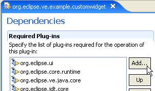
Having create the plugin there are two major steps remaining. The first is to create the actual custom widget class itself and test it, and the second is to extend the visual editor to have the customized behavior described in the intrduction.
The custom widget used in this tutorial extends SWT composite and
has three child controls on it; a label, a text field, and a
button. For this tutorial we used the Visual Editor to build the
custom widget which, although a good exercise in using the Visual
Editor is outside the scope of what this tutorial is designed to cover,
so you download it directly from CVS. You should download the two
classes MyCustomPrompter.java,
and
ButtonSelectionListener.java
and place them into the plugin prohject in a package org.eclipse.ve.customwidget.prompter.
This is illustrated below together with the Visual Editor opened
against the MyCustomPrompter class
to show the three child controls. The package org.eclipse.ve.example.customwidget is
where the visual editor classes (such as the specialized
graphical edit part or code generation decoder) will reside, and the
package org.eclipse.ve.customwidget.prompter
is where the classes reside that the user will use to build
their runtime GUIs with.

For deployment the classes MyCustomPrompter
and ButtonSelectionListener will
be packaged in a JAR. To do this select the runtime package and
use the pop up menu option Export
to bring up the Export wizard. Select JAR file as and name the
JAR file customwidgets.jar. This
JAR file will be placed inside the plugin itself and there are two ways
to do this. The first is to either export the JAR to a temporary
location on your computer and then import it into the project. If
you do this you should import the customwidgets.jar
not as a JAR file as it contains no code of any interest to the
plugin itself, but instead as a raw File.
The reason for this is that the inclusion of the runtime code in the
plugin is not for the benefit of Eclipse and it will never be loaded by
the Visual Editor into the Eclipse JVM. The user of the plugin
will configure their Java project to use the custom prompter which is
described in the later section Using
a classpath container, and
the visual editor will insert the JAR into the -classpath of the VM
that it uses to host the Java classes that make up the user's classes.
The second way to ensure that the customwidgets.jar
is included in the plugin that avoids having to export to the file
system and then re-import as a file, is to export straight to the
directory used by the plugin itself. To see the location of the
plugin you can open its properties and select Info. The figure
below shows an example of this where the workbench location is
D:\temp\tutorial and the JAR wizard creates customwidgets.jar into the
directory used by the org.eclipse.ve.example.customwidget
plugin.
For the test described at the end of the precedding section the MyCustomPrompter class was made
available to the user's Java project by them adding it as an external
JAR. This isn't ideal as it requires the user knowing the
location of the plugin directory on their computer and physically
pointing to it. A better way is to use a classpath
container. This allows one-touch configuration of a Java project
to use a named container which handles all the internals of how to
locate the correct runtime code.
A Java container is a class that implements the JDT interface org.eclipse.jdt.core.IClasspathContainer.
It is added to a Java project's build path using the Add Library button on the Libraries tab and an example of
one used by the Visual Editor is org.eclipse.ve.internal.swt.SWTContainer.
As well as the JDT using the container to locate the runtime classes
the Visual Editor uses this as a marker for extension behavior.
When the Visual Editor opens over a project all of the containers are
scanned and matched against extension points to see if there are any
plugins that wish to contribute to the palette or any other custom
visual editor behavior based on the classes included within the
container.
This tutorial doesn't create a new container class because the
complexities involved doing this require knowledge of JDT concepts such
as IPath and IClassPathEntry[]. It is expected that commercial
quality plugins extending the Visual Editor will create their own
containers in which case the SWTContainer
class is a good example to look at to learn how to do this,
however for simplicitly the visual editor provides a reference
implementation container class org.eclipse.ve.internal.java.core.RegisteredClassPathContainer.
The Registered container uses extension points to determine the
JAR files it will add to the user's build path.
The user experience is that a container called "Custom Prompter"
will be available for them to add to a Java project's build path.
This is described in the section Using
a classpath container. The JDT extension point org.eclipse.jdt.ui.classpathContainerPage allows
contributions to be made for an entry to appear in the list of
containers and be available for the user to select, as well as the
wizard page that will then appear once Next is pressed. The wizard
page is responsible for configuring the project's build path to
actually add the container classpath entry.
To add the Custom Prompter entry
to the list of available containers add the following to the plugin.xml
of the org.eclipse.ve.examples.customwidget
plugin.
The name
<extension
point="org.eclipse.jdt.ui.classpathContainerPage">
<classpathContainerPagename="Custom Prompter"
class="org.eclipse.ve.internal.java.wizard.RegisteredClasspathContainerWizardPage"
id="org.eclipse.ve.example.PrompterContainer">
</classpathContainerPage>
</extension>
"Custom Prompter" is the user visible String shown in the list
of available libraries from the Add
Library wizard on the Libraries
tab on the Java build
path. In a commercial quality plugin it is expected this
would come from a resource bundle and be externalized for different
locales however this tutorial will hard code it to the literal "Custom Prompter". Once the
user selects a container library to be added and presses Next a wizard page is brought up
showing configuration details of the particular container. This
wizard page implements
org.eclipse.jdt.ui.wizards.IClasspathContainerPage and for a
commercial quality plugin it is expected that a custom page would be
written. The visual editor SWT container page
org.eclipse.ve.internal.swt.SWTcontainerWizardPage is a good example to
look at if your intention is to create a full wizard page, however the
visual editor provides an example org.eclipse.ve.internal.java.wizard.RegisteredClasspathContainerWizardPage
that can be used . org.eclipse.ve.example.PrompterContainer.<extensionThe class used is a reference implementation provided by the Visual Editor and is
point="org.eclipse.jdt.core.classpathContainerInitializer">
<classpathContainerInitializer
</classpathContainerInitializer>
</extension>
org.eclipse.ve.internal.java.core.RegisteredClasspathcontainerInitializer.
The id used must match the one described earlier as the id of
the container wizard page. This tutorial is using org.eclipse.ve.example.PrompterContainer.<extensionThe name of the container must match the id used when the classpath wizard page and container initializer were defined. This tutorial is using
point="org.eclipse.ve.java.core.registrations">
<registration
</registration>
</extension>
org.eclipse.ve.example.PrompterContainer.
The container needs a description that will appear in the Java
build path list of classpath entries and the tutorial uses the hard
coded literal "Custom
Prompter". The plugin element
<library runtime="customwidgets.jar".> describes the actual
location of the runtime jars that container the MyCustomPrompter class. If
there are multiple jars then the entry can be repeated. The
location of the jar is relative to the plugin itself, so if customwidgets.jar were in a
directory called jars within
the plugin then the entry would be runtime="jars/.customwidgets.jar".Launch the Eclipse Application workbench using the Run menu to open the runtime
environment in which the MyCustomPrompter
class can be tested. If you have previously done this and
created a Java project with a build path entry pointing to the customwidgets.jar as described
earlier remove the jar from the build path. Otherwise create a
new Java project.
The next steps are the experience that a user of the plugin will
take to configure a Java project to work with the MyCustomPrompter custom
control. Open the properties for the Java project using the Properties choice on the pop-up
menu and select Java Build Path. Select
the Libraries tab and choose
the Add Library button.
This will bring up a list of all known Java containers which will
include the Custom Prompter
as defined using the extension point
org.eclipse.jdt.ui.classpathcontainerPage earlier. The figure below shows
the Java build path for a project called Test and the Custom Prompter
displayed in the llist of
available libraries opened from the Add
Library button
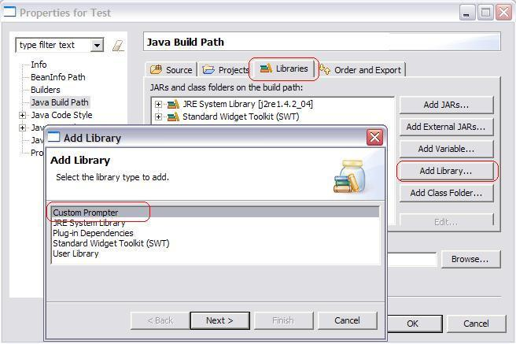
Select the Custom Prompter and
press Next to view the wizard page org.eclipse.ve.internal.java.wizard.RegisteredClasspathContainerWizardPage
defined earlier.
This is a generic example of a page and shows details of the jar that
will be added by the page. For commercial quality plugins it is
expected that this page however will be a specific to the particular
plugin.

<xmi:XMI xmi:version="2.0"The
xmlns:xmi="http://www.omg.org/XMI"
xmlns:palette="http:///org/eclipse/ve/internal/cde/palette.ecore"
xmlns:utility="http:///org/eclipse/ve/internal/cde/utility.ecore"><palette:CategoryCmp>
<categoryLabel xsi:type="utility:ConstantString" string="Custom"/>
<cmpGroups xsi:type="palette:GroupCmp">
<cmpEntries xsi:type="palette:AnnotatedCreationEntry" xmi:id="entry2" icon16Name="platform:/plugin/org.eclipse.ve.example.customwidget/icons/custom.gif">
<objectCreationEntry xsi:type="palette:EMFCreationToolEntry"creationClassURI="java:/org.eclipse.ve.example.customwidget.prompter#MyCustomPrompter"/>
<entryLabel xsi:type="utility:ConstantString" string="Prompter"/>
</cmpEntries>
</cmpGroups>
</palette:CategoryCmp>
</xmi:XMI>
<palette:categoryCmp> tag describes a
palette category that has a label and groups, each group containing a
number of entries. In the example for the tutorial the label is
hard coded to the literal "Custom".
graphic, the qualified  name of the class and the literal
string that is displayed on the palette entry. The
graphic points to the URL of where the image is located, in this case
the entry points to a file custom.gif
in the icons directory
of the plugin called org.eclipse.ve.example.customwidget.
The graphic used
name of the class and the literal
string that is displayed on the palette entry. The
graphic points to the URL of where the image is located, in this case
the entry points to a file custom.gif
in the icons directory
of the plugin called org.eclipse.ve.example.customwidget.
The graphic used  is available in CVS
and you will need to create a folder called icons in the plugin and copy it
there.
is available in CVS
and you will need to create a folder called icons in the plugin and copy it
there.
 Because
XMI files do not have anything to validate them at design time errors
made in their syntax can easily be made that cause runtime problems
that can be hard to trace and debug. The most straightforward way
to write a Visual Editor XMI file is to copy an existing one that is
similar to what you desire and then alter just the parts that need
changing.
Because
XMI files do not have anything to validate them at design time errors
made in their syntax can easily be made that cause runtime problems
that can be hard to trace and debug. The most straightforward way
to write a Visual Editor XMI file is to copy an existing one that is
similar to what you desire and then alter just the parts that need
changing.
Having create the customprompter.xmi
file we need to enable the Visual Editor to use it. This
is done by associating the palette file with a classpath container, in
our case the Custom Prompter.
Now that we have our palette xmi file available, we need to
contribute it to the Visual Editor. We do so by adding to the
following extension in the plugin's plugin.xml
manifest file.
<extension
<palette
</extension>
The extension point used is org.eclipse.ve.java.core.contributors. This
has a <palette> child XML tag that points to the id of the
container whose inclusion in a project's build path causes the palette
catgories defined in the categories tag to be included. The
palette categories tag is relative to the root of the plugin project,
for example If the palette XMI file is in a folder called palette then the entry would be categories="palette/customprompter.xmi".
When the Visual Editor starts it scans all of the project's build
path entries and for any that are containers it looks to see whether
there are any palette files. These are combined together to
create the overall palette.
Advanced >> As well as describing palette entries directly it
is possible to configure the Visual Editor to have an
IConfigurationContribution that has the ability to manipulate both the
-classpath of the Visual Editor's VM and the palette with more fine
control. An example of where this is done is by SWT that has to
add runtime packages such as DLLs or packages to the VM's arguments, or
a plugin that might wish to remove some of the existing palette
entriies (such as the JFC ones) for projects configured with their
container present.
Advanced>> As well as defining containers to be the trigger
point for Visual Editor custom behavior you can also use plugins by
direct name. An example of where you might do this is if you were
extending the Visual Editor to work with a set of classes that were
containined in a specific plugin, so the user experience to enable a
Java project would be to add a dependent plugin rather than a classpath
container. An example of this might be something like a PDE type
development environment for the actual end user.

 When you llaunch the Eclipse Application workspace use
the -clean option, as each time the plugin.xml manifest file has
changed we need to be sure the runtinme Eclipse environment clears its
cache'd manifest details
When you llaunch the Eclipse Application workspace use
the -clean option, as each time the plugin.xml manifest file has
changed we need to be sure the runtinme Eclipse environment clears its
cache'd manifest detailsMyCustomPrompter class
has an int property named type
with getType() and setType(int aType)
methods. While the signature of setType allows ito accept
any int, the class itself only works with one of the three values 0, 1,
or 2 The definition of the the values is held in three static constants
on the MyPrompterClass.
public final static int DOTS = 0;
public final static int MORE = 1;
public final static int OPEN = 2;
The significance of the three values is that they alter the button
text for MyCustomPrompter to be
either "...", "More", or "Open" respectively. The following
code shows this for MyCustomPrompter's
setType(int type) method.
public void setType (int type) {
switch (type) {
case DOTS: button.setText("...");
break;
case MORE: button.setText("More");
break;
case OPEN: button.setText("Open");
break;
default:
throw new IllegalArgumentException("Value " + type + " must be one of 0, 1 or 2");
}
}
Whenever a class is selected in the Visual Editor graphical canvas
or Java Beans tree viewer the Properties view will show its properties
and their current values. The view can also be used to edit the
property values, and the Visual Editor has a number of pre-defined
editors associated with specific types. int properties for example have an
editor that allows only valid int values
to be entered and by default the Visual Editor will use this whenever
the type property is
selected based on its signature.
This step of the tutorial describes how to override the default
behavior so that the type property
is edited using a drop down list of the three allowable values.
Also, instead of the values 0, 1 and 2 being displayed as the current
values the literals "Dots", "More" and "Open" will be used
instead. This is described as an objective of the tutorial in the
Introduction.
To override the behavior of the type
property so that it has the desired behavior involves using a
BeanInfo class. BeanInfo classes provide a way to describe a
classes' design time behavior and art part of the JavaBeans
specification. The Visual Editor uses the JavaBeans
specification whereever possible to define edit time behavior for a
JavaBean.
The BeanInfo specification allows for a class with the same name as
its Java peer to exist that describes the edit time behavior of the
class. For example, the tutorial class is named MyCustomPrompter so there
would be a class MyCustomPrompterBeanInfo
that implements the interface java.beans.BeanInfo associated
with it. The simplest way to create this class is to put it in
the same package as the class it describes (e.g. org.eclipse.ve.example.customwidget)
. Strictly speaking this isn't good physical separation of
behaviors as the BeanInfo classes should be kept apart from the runtime
in a separate package and separate jar so they don't become part of the
end user's actual deployment configuration. The Visual Editor
does support scenarios where the BeanInfo is in separate packages and
separate jars, however for the purpose of this tutorial the class org.eclipse.ve.examples.customwidget.MyCustomPrompterBeanInfo
will be created that extends the abstract superclass java.beans.SimpleBeanInfo.
public PropertyDescriptor[] getPropertyDescriptors() {
try {
PropertyDescriptor[] result = new PropertyDescriptor[2];
result[0] = new PropertyDescriptor("text",MyCustomPrompter.class);
result[1] = new PropertyDescriptor("type",MyCustomPrompter.class);
result[1].setValue(
});
return result;
} catch (IntrospectionException e) {
e.printStackTrace();
return null;
}
}
The getPropertyDescriptors() method returns an array of two
properties; text and type. The type property has a key value pair
assigned to it with a key of enumerationValues
and a value that is an array of nine elements. These nine
elements represent the three enumerated values defined as a
tri-values. The first of these is for the value 0 and is defined
as displayName,value,initString
of "Dots", 0, "0". Instead of hard coding
the 0 however they are coded to be the dynamic lookups of the actual
value from the static constant, allowing the constant to internally
change without requiring BeanInfo modification. The other two
values "More" and
"Open" are defined as tri-values for the 4th, 5th and 6th elements of
the array and the 7th, 8th and 9th respectively.
The getPropertyDescriptors()
method returns a fully inclusive set of property descriptors for the
JavaBean. For MyCustomPrompter
the user experience the tutorial wants is that the inherited
properties such as background, foreground, size, etc.. are present on
the class. To achieve this rather than having the getPropertyDescriptors() method
collect the full list of all desired properties, the JavaBeans
specification allows for the method BeanInfo[] getAdditionalBeanInfo()
to be specialized. This returns an array of BeanInfo classes whose
properties are merged together with the result of getPropertyDescriptors() to
create the complete list.
public BeanInfo[] getAdditionalBeanInfo(){
try{
} catch (IntrospectionException e){
return new BeanInfo[0];
}
wis used instead.
The reason for this is that while MyCustomPrompter
extends Composite it does this more for physical reasons so it
can have its three child controls (the Label, Text and Button), however as a black box
custom class it itself doesn't want to inherit the behavior of Composite such as the ability
to have its layout changed. For this reason it is logically a
subclass of Control.Having updated MyCustomPrompterBeanInfo.java
this must be re-exported to the customwidgets.jar
file. The customwidgets.jar in the plugin is the one that
the Custom Prompter classpath
container uses in its build path, and if the step of re-creating the customwidgets.jar file is not done
when you launch the Eclipse Application you will be using the old
version of the code. Currently Eclipse 3.1 does not support
classpath container entries pointing to folder structures otherwise the
RegisteredClassPathContainer could be coded to automatically look back
into the directory structure of the development environment that
launched it so for now don't forget to keep re-creating the customwidgets.jar file each time
any of its contents have changed.
At the heart of the Visual Editor is an EMF model that describes a
class being edited. This model describes the instances, their
relationships and property settings. Instances of objects in this model
implement org.eclipse.jem.internal.instantiation.base.IJavaInstance.
For example, a visual editor class that has a Shell whose size is 200,200
will contain two IJavaInstance objects.
The first of these is for the Shell
itself and the second is for a Point representing the
size. An EMF relationship between the Shell and the Point instance will exist
whose structural feature represents the size property.
EMF is a self describing structure, so behind the instance model there
is a meta-model that describes the classes themselves - their methods,
properties, events and hierarchy. The meta-model is created by the
Visual Editor using a combination of reflection and JavaBeans
Introspection. Instances in this metamodel consist of org.eclipse.jem.java.JavaClass
for each Java class. The structural features in the model are
instances of EReference and represent the properties of the Java class.
There are times when it is necessary to provide additional
information that should be merged in with the EMF model of a
JavaClass. An example of this is a new feature has to be added
over and above those that can be determined by reflection.
The Visual Editor uses the EMF model of a JavaClass not only to
define its shape but also to define a number of helper classes used by
the Visual Editor. These are typically mediator classes that are
used by the different Visual Editor subsystems. The names of the
mediator classes to use for a given JavaClass are held in the EMF
model, thereby allowing specific classes to have custom behavior for
each subsystem. Rather than hold these directly against the
JavaClass (which is a generic model of Java classes that can be used by
Eclipse plugins other than the Visual Editor) they are held
against decorators classes that annotate the descriptive information of
a class. These can be thought of similar to key value pairs that
hold information rather than provide functionality.
In summary, override files are used as means to modify, add to or
delete from an EMF JavaClass whose shape is determined through using
standard Java reflection combined with BeanInfo introspection.
For a plugin to contribute override files its plugin manifest must implement the extension point org.eclipse.jem.beaninfo.registrations. This specifies the trigger in the build path that will cause the overrides to be applied (either a classpath container or pre-requisite project) as well as the name of a Java package and where override files for its contents are held within the plugin folder structure. The code below shows the extension used for the plugin.xml for the org.eclipse.ve.examples.customwidget example in this tutorial.
<extension
point="org.eclipse.jem.beaninfo.registrations">
<override
</override>
</registration>
</extension>
The classpath container with an id of is
the one used by the Custom Prompter library.
The class being overriden is org.eclipse.ve.example.customwidget.prompter.MyCustomPrompter
so its package is declared together with a
folder location for where the override files will be stored. The
location of the override folder is up to the creator of the plugin and
is any arbitrary folder, however there is a convention that the Visual
Editor uses where override files are held in a top level folder called overrides and then sub folders
created for the package path.

The MyCustomPrompter class has a String property named text. By default the Visual Editor will use a generic String cell editor for it (see Figure). But let assume that we want to develop a specialized cell editor for this property. First we are going to use the Visual Editor itself to develop the content of the cell editor (LabelDialogContent.java). We will then contribute it to VE so that it uses it as the text cell editor for a MyCustomPrompter class. The main interface fwith the LabelDialogContent class will be a simple setter/getter: getString and setString methods. The idea is that when you click on the text property on the property sheet, VE will bring up an instance of this class, call setString with the current value, and at the end call getString to get the final, edited value.
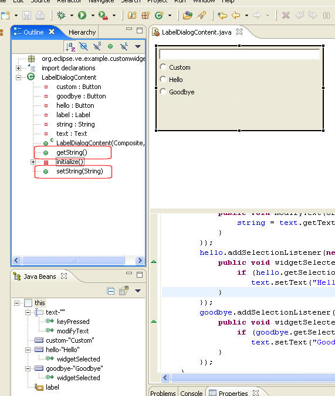
VE will require a special Cell Editor based class (we will create a CustomLabelEditor.java class). This class will wrap our GUI content class as following:
protected Object openDialogBox(Control cellEditorWindow) {
Display display = cellEditorWindow.getDisplay();
TitleAreaDialog dialog = new TitleAreaDialog(display.getActiveShell()) {
LabelDialogContent content;
protected Control createContents(Composite parent) {
Control result = super.createContents(parent);
setTitleImage(CustomwidgetPlugin.getCustomImage());
setTitle("Prompter's text property editor");
setMessage("Enter the text property, or select a default one by checking the Hello or GoodBye",IMessageProvider.INFORMATION);
return result;
}
protected Control createDialogArea(Composite parent) {
content = new LabelDialogContent(parent, SWT.NONE);
content.setString(stringValue);
return content;
}
public String toString() {
return content.getString();
}
};
if (dialog.open() != Window.CANCEL)
return createStringJavaObject(dialog.toString());
else
return getValue();
}
The openDialogBox will be called when the text property is selected in the property sheet. It in turn will open a JFace dialog with our LabelDialogContent as the createDialogArea's content. The openDialogBox needs to return the new value. This value is not a String. This value is the VE (EMF) model element representing the string value. The createStringJavaObject call will convert the string to an EMF representation of it.
 When we
prime the dialog with a stringValue, we need to figure out what
is the actual value that is represented by the (EMF) model
element. The value of the text property of a MyCustomPrompter
instance may not be the same value as was set to it in the model.
In fact, it may be the case that the text setting was never set, but it
has some default value; but what is it? To figure this out we
will have to go to the live instance of this String on the target VM
and extract its value. This logic is done with the doSetValue
method. doSetValue is called from the property sheet to prime
the cell editor with the model value. This method uses BeanProxy
APIs to refer to the actual object (on the target VM) that is referred
to by the model's value. IStringBeanProxy is the link between the
EMF String object, and the Target VM String instance.
When we
prime the dialog with a stringValue, we need to figure out what
is the actual value that is represented by the (EMF) model
element. The value of the text property of a MyCustomPrompter
instance may not be the same value as was set to it in the model.
In fact, it may be the case that the text setting was never set, but it
has some default value; but what is it? To figure this out we
will have to go to the live instance of this String on the target VM
and extract its value. This logic is done with the doSetValue
method. doSetValue is called from the property sheet to prime
the cell editor with the model value. This method uses BeanProxy
APIs to refer to the actual object (on the target VM) that is referred
to by the model's value. IStringBeanProxy is the link between the
EMF String object, and the Target VM String instance.
protected void doSetValue(Object value) {
if (value != null){
IStringBeanProxy stringBeanProxy = (IStringBeanProxy) BeanProxyUtilities.getBeanProxy((IJavaInstance) value);
stringValue = stringBeanProxy.stringValue();
}
super.doSetValue(value);
}
Now that we have the cell editor all coded up, we need to tell VE when to use it. VE uses xmi overrides files to do so. These override files (like the palette contribution) are quite verbose. Here is a portion of the MyCustomPrompter.override that relates to the cell editor. We will need to add this file to our plugin.
<?xml version="1.0" encoding="UTF-8"?>
:
:
<event:Add featureName="eStructuralFeatures">
<addedEObjects xsi:type="ecore:EReference" name="text" unsettable="true">
<eAnnotations xsi:type="org.eclipse.ve.internal.cde.decorators:BasePropertyDecorator"
cellEditorClassname="org.eclipse.ve.example.customwidget/org.eclipse.ve.example.customwidget.CustomLabelEditor"/>
</addedEObjects>
</event:Add>
</xmi:XMI>
We are telling the introspector to annotate the text feature with a BasePropertyDecorator EMF class. One of the properties of this class is a cellEditorClassname. The value format is as following: <plugin_name>/<class_name>. The Property Sheet will use this information to determine which cell editor to use. If one is not set, it will use the annotation of a super class.
The following is the directory structure after adding the new cell editor classes, and override file:

 Make
sure to launch the workspace with the -clean option, as we have changed
the manifest file.
Make
sure to launch the workspace with the -clean option, as we have changed
the manifest file.
 If you
are reading this before a VE1.1 release build, you may have to do a
Project->clean, close, and reopen the java project that you are
using the
MyCustomPrompter class so that the introspector clear its beaninfo
cache.
If you
are reading this before a VE1.1 release build, you may have to do a
Project->clean, close, and reopen the java project that you are
using the
MyCustomPrompter class so that the introspector clear its beaninfo
cache.
The following is the an image of the cell editor that will now come up when a user press on the ... button of the text property of a MyCustomPrompter.

Since the MyCustomPrompter is a SWT Composite, VE will use the default Composite GEF edit part. In this tutorial we are going to override the edit part that VE will use for the prompter. This edit part will not do much, but add to the prompter's image an icon, and some text on top of the screen scrape image of the prompter. The new class CustomWidgetGraphicalEditPart.java adds this logic as following:
public class CustomWidgetGraphicalEditPart extends ControlGraphicalEditPart {
protected IFigure createFigure() {
ImageFigure figure = (ImageFigure) super.createFigure();
Label customFigure = new Label("VE Rules",CustomwidgetPlugin.getCustomImage());
customFigure.setForegroundColor(ColorConstants.red);
customFigure.setTextPlacement(PositionConstants.SOUTH);
// ImageFigure has no layout, so we will have to explicitly set the size().
// To get a prefered size (before we hoop up to the hierarchy), Label will need a Font
customFigure.setFont(((GraphicalEditPart)getParent()).getFigure().getFont());
customFigure.setSize(customFigure.getPreferredSize());
figure.add(customFigure);
return figure;
}
}
The edit part extends the default Control editpart. The reason we did not extend the default composite one, is that we do not want to allow one to "drop" anything into our prompter (this widget is still a Composite). All we do here, is add a Label figure to the main (screen scraped) figure.
Now that we have a custom edit part we will tell VE to use it by updating the MyCustomPrompter.override file as following;
<event:AddMany featureName="eAnnotations">
<addedEObjects xsi:type="org.eclipse.ve.internal.cde.decorators:ClassDescriptorDecorator"
graphViewClassname="org.eclipse.ve.example.customwidget/org.eclipse.ve.example.customwidget.CustomWidgetGraphicalEditPart">
</addedEObjects>
<addedEObjects xsi:type="codeGenHelpers:CodeGenHelperClass" source="codegen.CodeGenHelperClass"
expDecoder="org.eclipse.ve.example.customwidget/org.eclipse.ve.example.customwidget.CustomPrompterDecoder"/>
</event:AddMany>
We are annotating the class itself with a ClassDescriptorDecorator. A ClassDescriptorDecorator has a graphViewClassname property. It uses the <plugin_name>/<class_name> format.
 If you
are reading this before a VE1.1 release build, you may have to do a
Project->clean, close, and reopen the java project that you are
using the
MyCustomPrompter class so that the introspector clear its beaninfo
cache.
If you
are reading this before a VE1.1 release build, you may have to do a
Project->clean, close, and reopen the java project that you are
using the
MyCustomPrompter class so that the introspector clear its beaninfo
cache.
The new edit part will render the Prompter figure with the new Label figure (text and icon) as following:

Since the MyCustomPrompter is a SWT Composite, VE will use the default Composite Decoder to handle the reverse parse, and code generation needs for the MyCustomPrompter class. For every source code (AST) expression that is modeled, VE will use an instance of an expression Decoder. The Decoder uses two helpers: a feature mapper, and a decoder helper. The feature mapper is the guy that maps a source code expression to a VE (EMF) model feature and vice versa. The decoder helper is a specific helper that knows how to reverse parse (AST) expressions into the VE model, as well as generate source code from the VE model. The role if the Decoder itself is to figure out which mapper and helper to use for a given expression.
 Decoders
to not generate AST trees because in many cases the source code is
generated from a JavaJet (JSP like) templates. These templates
can potentially be modified by users and picked up by VE on the fly.
Decoders
to not generate AST trees because in many cases the source code is
generated from a JavaJet (JSP like) templates. These templates
can potentially be modified by users and picked up by VE on the fly.
In this tutorial we will use a simple Decoder. It will add a comment when generating a setText expression (as a result of changing the text property is changed for a MyCustomPrompter instance). We will first create the CustomPrompterDecoderHelper.java helper.
public class CustomPrompterDecoderHelper extends SimpleAttributeDecoderHelper {
/* (non-Javadoc)
* @see org.eclipse.ve.internal.java.codegen.java.IExpressionDecoderHelper#generate(java.lang.Object[])
*/
public String generate(Object[] noArgs) throws CodeGenException {
String result = super.generate(noArgs);
// Add a comment at the end of the expression
int idx = result.lastIndexOf(';') + 1;
return result.substring(0, idx) + " // Prompter Text Property " + result.substring(idx, result.length());
}
}
The helper is responsible to reverse parse and generate specific source code. This helper overrides the generate method for the default helper, and adds the // Prompter Text Property comment at the end of the expression that is generated by the SimpleAttributeDecoderHelper.
We will now create a special Decoder, CustomPrompterDecoder.java. This Decoder will use the helper above when the text property is the one that the Decoder instance is responsible for:
public class CustomPrompterDecoder extends SWTControlDecoder {
protected void initialDecoderHelper() {
// if it is the text property that this decoder is decoding, use
// our special helper
if (fFeatureMapper.getFeature(null).getName().equals("text"))
fhelper = new CustomPrompterDecoderHelper(fbeanPart, fExpr, fFeatureMapper, this);
else
super.initialDecoderHelper();
}
}
The last thing that remains to do, is to use the same MyCustomPrompter.override again and add to it the following:
<event:AddMany featureName="eAnnotations">
<addedEObjects xsi:type="org.eclipse.ve.internal.cde.decorators:ClassDescriptorDecorator"
graphViewClassname="org.eclipse.ve.example.customwidget/org.eclipse.ve.example.customwidget.CustomWidgetGraphicalEditPart">
</addedEObjects>
<addedEObjects xsi:type="codeGenHelpers:CodeGenHelperClass" source="codegen.CodeGenHelperClass"
expDecoder="org.eclipse.ve.example.customwidget/org.eclipse.ve.example.customwidget.CustomPrompterDecoder"/>
</event:AddMany>
We are annotating the MyCustomPrompter class with a CodeGenHelperClass (this helper is dynamically created by EMF at this point, and hence the different syntax on it). This annotation tells VE that for a MyCustomPrompter, use the CustomPrompterDecoder class.
The MyCustomPrompter class introduces a buttonSelection event. VE will figure this out from the class file because the event follows the JavaBean specification.
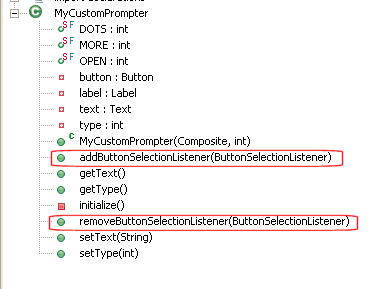
As such, if you use the Visual Editor to Add Events..., the buttonSelection event will be there. In this section we will use the BeanInfo class to denote that this event is preferred. As such, this event will be available on the Events context menu:
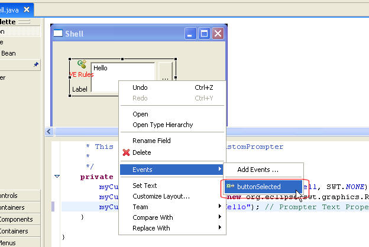
The MyCustomPrompterBeanInfo.java also overrides the getEventSetDescriptors method, and set the preferred flag to true.
public EventSetDescriptor[] getEventSetDescriptors() {
try{
MethodDescriptor addButtonSelectionMD = new MethodDescriptor(
ButtonSelectionListener.class.getMethod("buttonSelected",
new Class[]{SelectionEvent.class})
);
addButtonSelectionMD.setPreferred(true);
addButtonSelectionMD.setValue("preferred",Boolean.TRUE);
EventSetDescriptor addButtonSelectionED = new EventSetDescriptor(
"buttonSelection",
ButtonSelectionListener.class,
new MethodDescriptor[] {addButtonSelectionMD},
MyCustomPrompter.class.getMethod("addButtonSelectionListener",new Class[]{ButtonSelectionListener.class}),
MyCustomPrompter.class.getMethod("removeButtonSelectionListener",new Class[]{ButtonSelectionListener.class})
);
addButtonSelectionED.setPreferred(true);
return new EventSetDescriptor[] {addButtonSelectionED};
} catch (Exception e){
e.printStackTrace();
}
return null;
}


Figure 2 Check Out org.eclipse.ve.example.customwidget to
install the completed example into your Eclipse workbench
In part 1 of this tutorial, we looked at a high level where to start and extend the Visual Editor and use specialized property cell editors, BeanInfo, GEF edit parts, palette, and CodeGen decoders.
IBM is trademark of International Business Machines Corporation in the United States, other countries, or both.
Java and all Java-based trademarks and logos are trademarks or registered trademarks of Sun Microsystems, Inc. in the United States, other countries, or both.
Microsoft and Windows are trademarks of Microsoft Corporation in the United States, other countries, or both.
Other company, product, and service names may be trademarks or service marks of others.